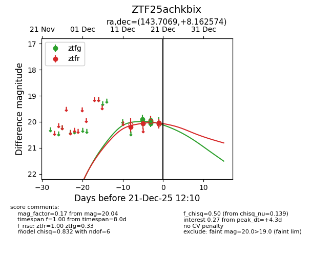
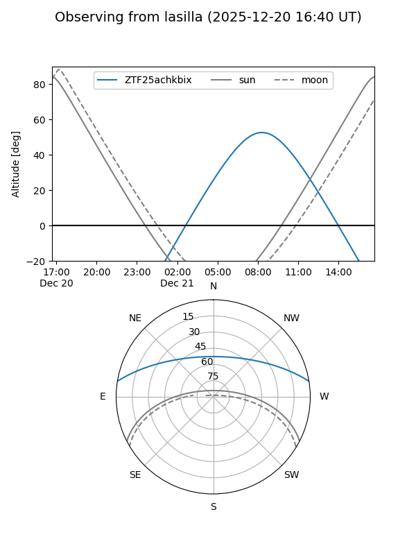
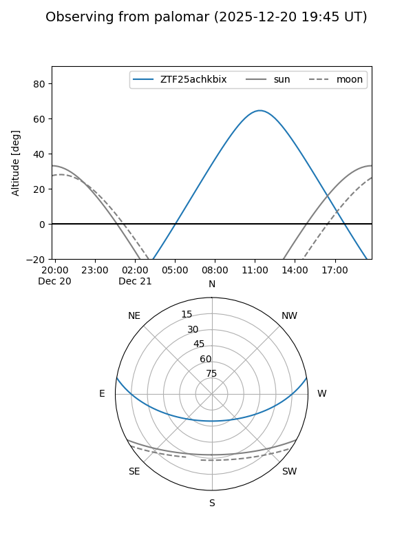
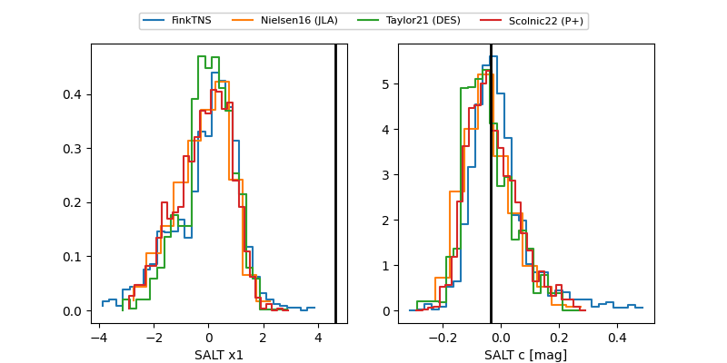

ZTF25achkbix
Target ZTF25achkbix at 2025-12-18 13:42
Aliases and brokers:
FINK: fink-portal.org/ZTF25achkbix
Lasair: lasair-ztf.lsst.ac.uk/objects/ZTF25achkbix
ALeRCE: alerce.online/object/ZTF25achkbix
alt names
ZTF25achkbix (ztf,fink_ztf)
Coordinates:
equatorial (ra, dec) = 143.7069,+8.16257
equatorial (HMS+DMS) = 09:34:49.64,+08:09:45.27
galactic (l, b) = (225.6394,+39.86180)
Photometry
last ztfg=20.06, ztfr=20.06
3 ztfg, 2 ztfr detections
Lightcurve

Visibility


Additional plots
